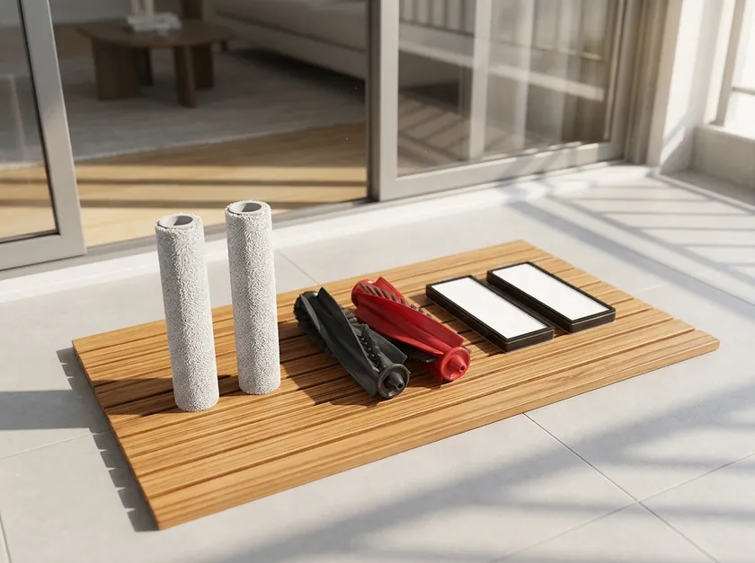
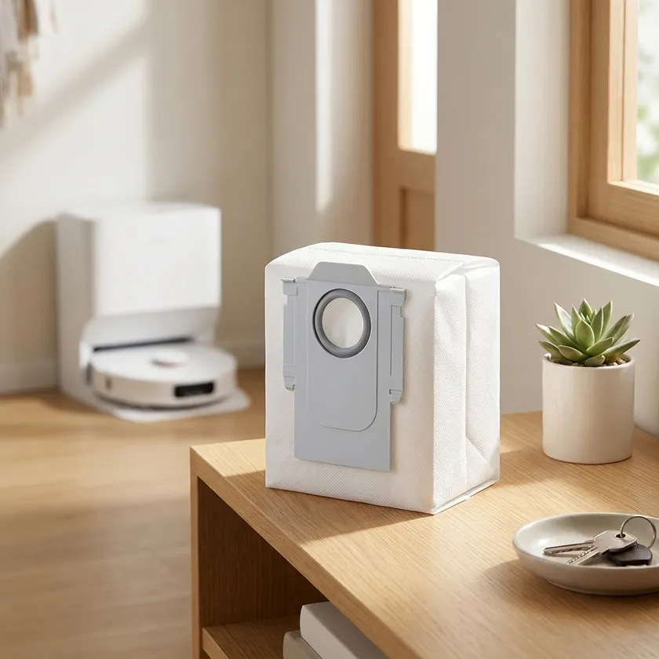

로보락 (Roborock)
로보락 Q Revo Curv 2 Flow 소모품 규격 비교｜롤러 걸레·브러시 1년 세트
글·구성: 제이상점 · 기종별 1:1 호환 실물 점검 · 교체 주기 비교표 · 스마트스토어 패키지 안내

핵심 관리 · 선택 체크포인트
- 요즘 집에서 겪기 쉬운 로보락 Q Revo 시리즈를 쓰다가 소모품 교체 시기가 됐는데 일반 Q Revo Curv(원판 걸레)와 Curv 2 Flow(원통형 롤러 걸레) 부품이 헷갈려 주문을 망설이게 되는 상황, 혹시 우리 집 로봇청소기 이야기 같으신가요?
- Q Revo Curv 2 Flow 구매 전 꼭 짚어볼 실물 부품 디테일: 호환 소모품을 고를 때 가장 먼저 살펴야 할 핵심은 그레이 스트라이프 원통형 롤러 물걸레 슬리브와 적·흑 2분할 듀오디바이드 브러시의 정밀한 체결감입니다.
- Q Revo Curv 2 Flow 소모품 교체 주기 & 전용 규격 한눈 비교표: 앱 잔여 수명 퍼센트(%)와 함께 아래 실물 마모 신호를 대조해 보시면 교체 타이밍을 놓치지 않고 Q Revo Curv 2 Flow를 최적 상태로 유지할 수 있습니다.
- 단품 구매 vs 패키지 선택, Q Revo Curv 2 Flow 옵션 고르는 현실 기준: 제이상점 Q Revo Curv 2 Flow 전용 패키지는 1년 세트·6개월 세트·3개월 세트 3가지 기간 옵션에 롤러 슬리브·듀오디바이드 브러시·2암 사이드브러시·필터·더스트백·세제까지 알차게 구성되어 있습니다.
- 현재 대표 구성 기준가 72,400원대(옵션·할인 혜택에 따라 스토어 결제 화면 기준 상이)로 운영 중이니 우리 집 청소 주기와 남은 재고를 대조한 뒤 제이상점 로보락 Q Revo Curv 2 Flow 스마트스토어 상세 옵션에서 가장 실속 있는 구성을 선택해 보세요.
실물 부품 디테일 · 관리 구성 이미지




부품 규격 · 점검 기준표
| 핵심 소모품 구분 | Q Revo Curv 2 Flow 전용 규격 특징 | 체감 교체 신호 & 권장 관리 기준 |
|---|---|---|
| 원통형 롤러 물걸레 | 그레이 스트라이프 장폭 롤러 슬리브 | 일반 Curv 원형 패드와 호환 불가 · 섬유 압착이나 냄새 발생 시 교체 |
| 듀오디바이드·2암 브러시 | 적·흑 원추형 2분할 롤러 + 곡선형 2암 브러시 | 머리카락 중앙 흡입 유로 확보 및 양끝 축 마모 시 교체 |
| 블랙 프레임 필터·더스트백 | 사각 워셔블 헤파필터 + 슬라이딩 더스트백 | 필터 24시간 완전 건조 교대 및 더스트백 70~80% 시점 교체 |
💡 교체 주기가 겹치는 필터·브러시·물걸레·더스트백은 단품 배송비를 여러 번 내기보다 로보락 Q Revo Curv 2 Flow 기간별 세트(3개월·6개월·1년)로 미리 구비해 두면 물세척 후 24시간 교대 건조까지 끊김 없이 관리할 수 있습니다.
자주 묻는 질문 (FAQ)
Q. 기존 로보락 Q Revo나 Q Revo Curv용 소모품 세트를 사서 Curv 2 Flow에 끼워도 되나요?
A. 안 됩니다. 모델명 끝에 ‘2 Flow’가 붙은 기종은 하단 물걸레 모듈이 원판 2개 방식에서 일체형 원통 롤러 방식으로 변경되었기 때문에 반드시 Q Revo Curv 2 Flow 전용 규격 세트를 선택하셔야 합니다.
Q. 롤러 물걸레 세척 시 도크에 넣을 정품 대용량 세제도 따로 추가할 수 있나요?
A. 세트 기본 구성 외에 물걸레 청소 빈도가 높아 대용량 정품 세정제를 넉넉히 보충하고 싶으시다면 로보락 정품 전용 클리너 세제 1L (1병·2병 옵션) 페이지에서 1L 1병·2병 옵션을 함께 비교해 보세요.
제이상점 1:1 검수 추천 패키지 · 구매 안내
메인 추천 구성
대표 구성 참고가 72,400원대 (옵션·쿠폰별 스마트스토어 결제 화면 기준)
1년 세트6개월 세트3개월 세트
![[정품] 로보락 세제 전용 세정제 세정액 클리너 소모품 S10 S9 S8](../../assets/img/roborock-cleaner-product-eec13fec.webp)
함께 많이 찾는 보충 구성
용량 1L-1병용량 1L-2병(복수구매할인)
☑️ 주문 전 확인해 두면 좋은 제이상점 안심 포인트
· 기종별 1:1 전용 규격 검수: 모델명·연식에 맞는 호환·정품 구성을 검수해 오주문 불안을 줄였습니다.
· 해외직배송 미리 주문 팁: 중국 구매대행·해외직배송 상품이므로 마지막 여분 1개를 꺼내 쓰는 시점에 개인통관고유부호와 함께 여유 있게 주문해 두시면 훨씬 경제적인 비용으로 끊김 없이 교체하실 수 있습니다.
· 기종별 1:1 전용 규격 검수: 모델명·연식에 맞는 호환·정품 구성을 검수해 오주문 불안을 줄였습니다.
· 해외직배송 미리 주문 팁: 중국 구매대행·해외직배송 상품이므로 마지막 여분 1개를 꺼내 쓰는 시점에 개인통관고유부호와 함께 여유 있게 주문해 두시면 훨씬 경제적인 비용으로 끊김 없이 교체하실 수 있습니다.
📖 더 많은 가정 내 사용 스토리와 상세 후기가 궁금하시다면
📱 네이버 블로그 모바일 원문 보기 ↗